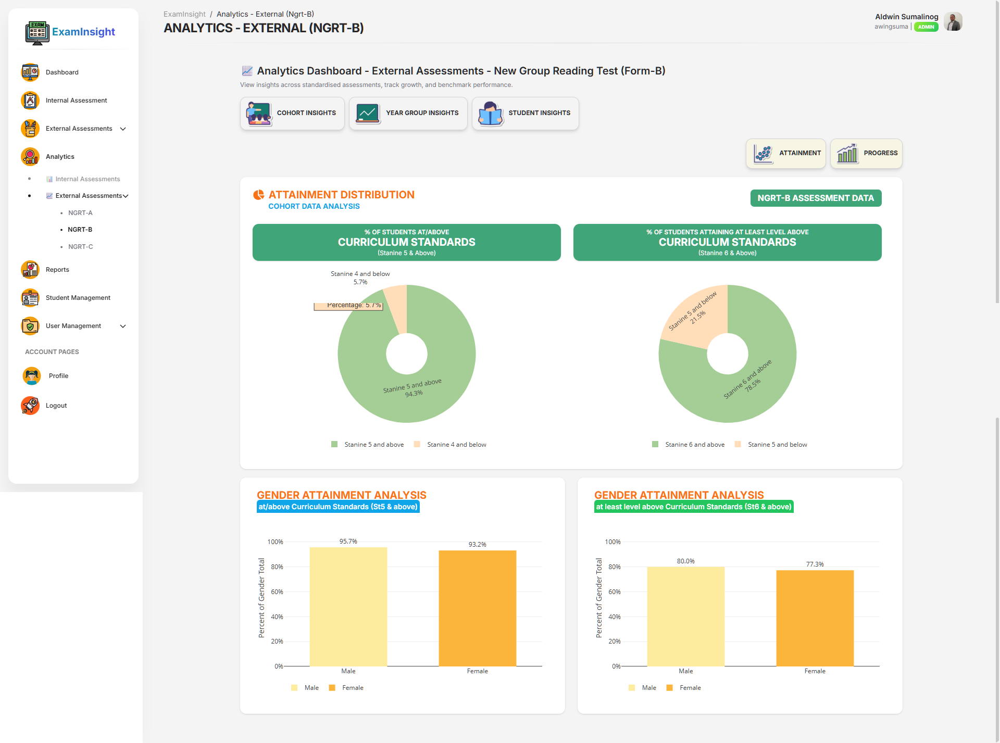
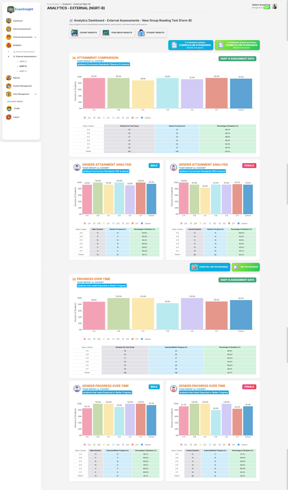
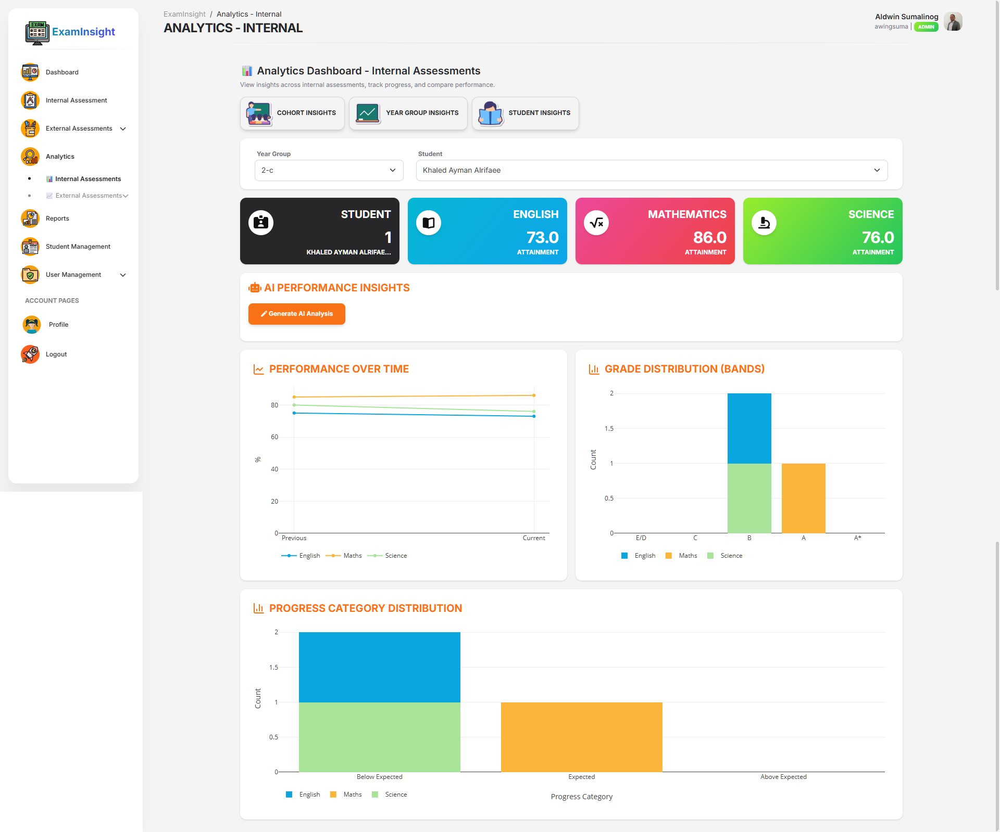

Project Overview
ExamInsight is a data analytics platform designed to visualize student assessment data and track performance trends across cohorts, year groups, and individual learners.
📊 Analytics Dashboard Preview
ExamInsight provides interactive dashboards that allow educators to analyze student assessment data across cohorts, year groups, and individual learners.
Cohort Insights

Year Group Insights

Student Insights

System Architecture


- Flask backend APIs
- SQLAlchemy database models
- REST analytics endpoints
- JavaScript analytics dashboards
- Bootstrap UI components
Repository Statistics
⭐ Stars:
🍴 Forks:
👀 Watchers:
Commit Activity